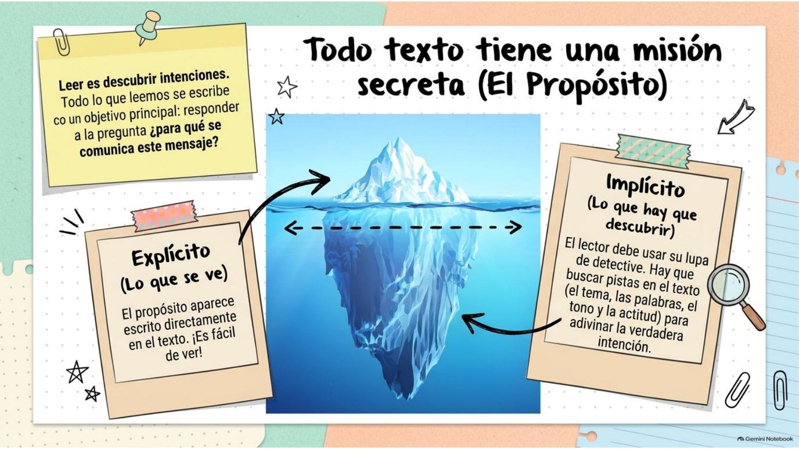
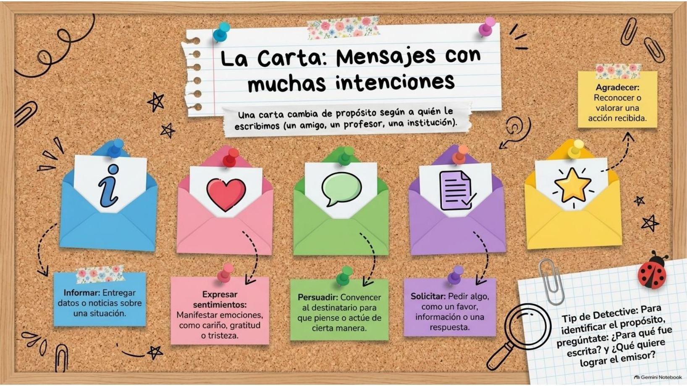
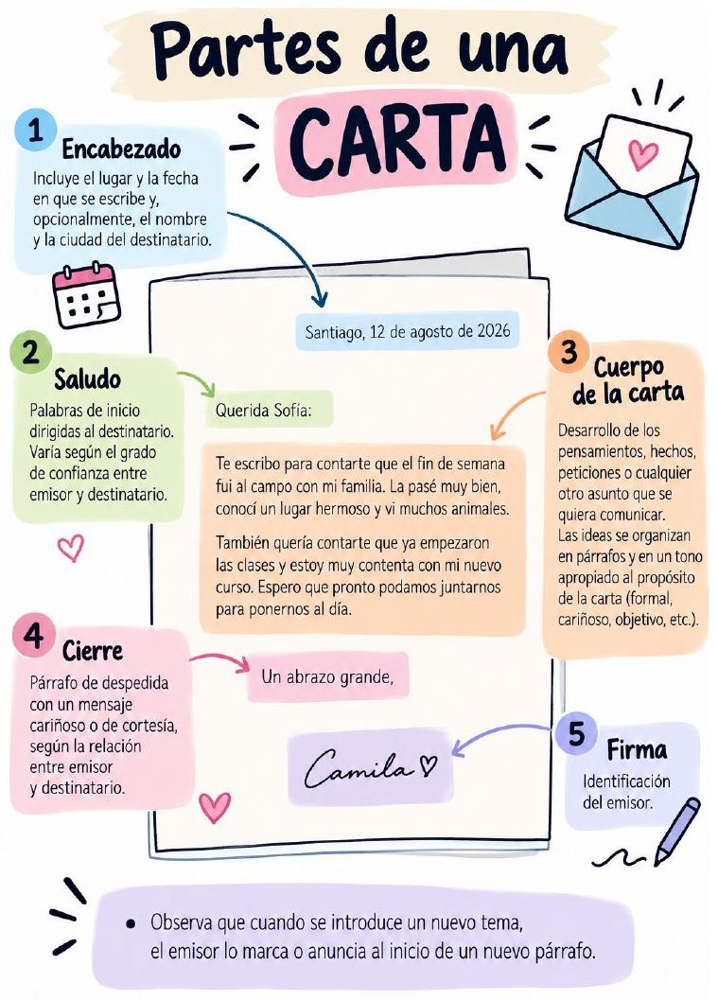
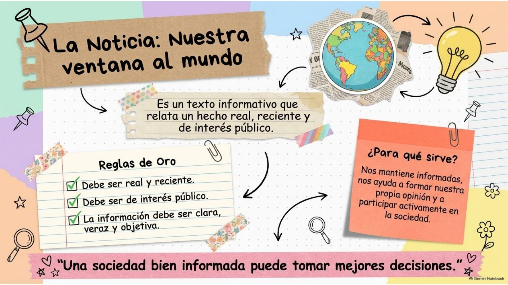
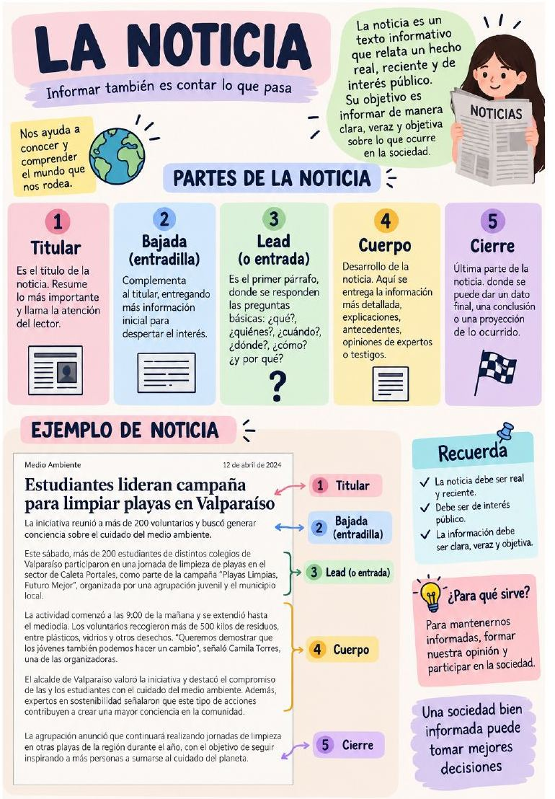
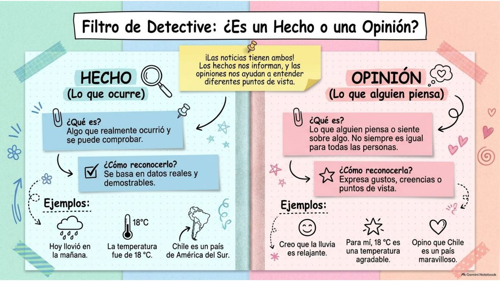
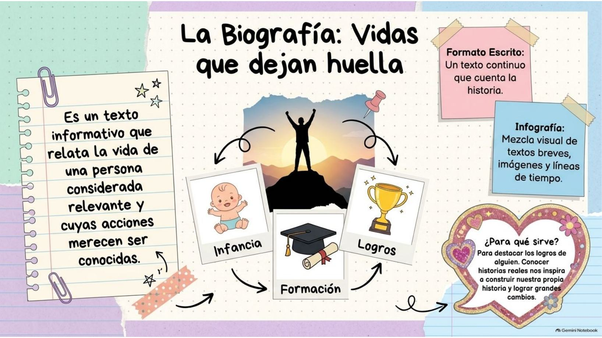
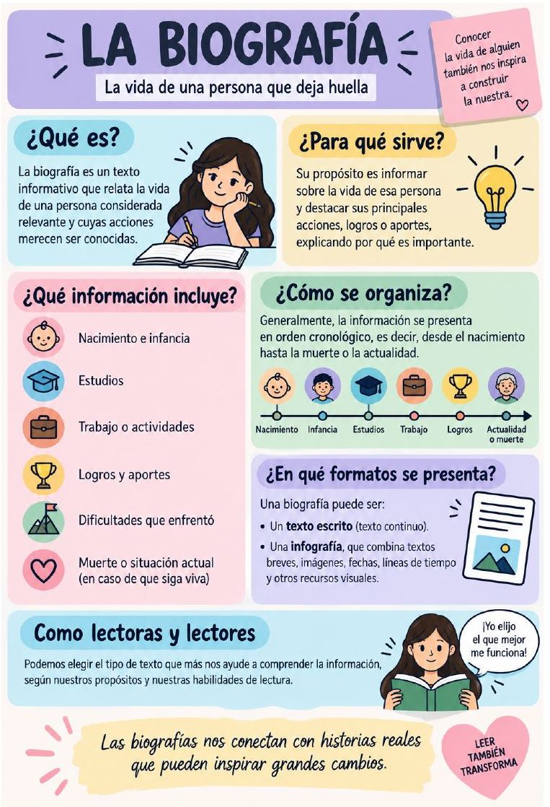
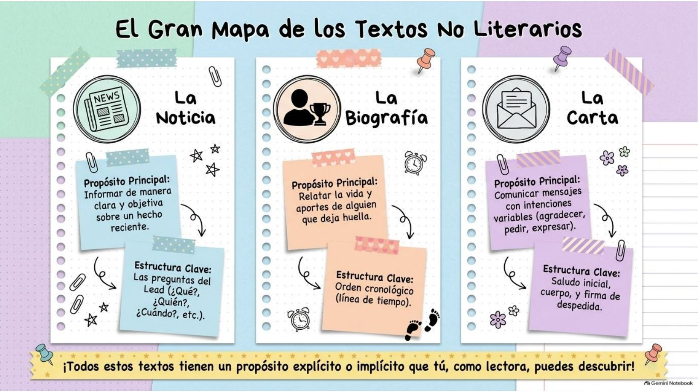

Prueba de Lenguaje · Unidad 3: ¿Por qué importa la paz?
Hola, Amparo. Vamos a preparar la prueba de Lenguaje.
Son dos pasos. Primero repasas cada tema: las primeras ocho lecciones son lo que tu profesora está reforzando (el propósito de los textos, la carta, la noticia, la biografía y hecho u opinión) y después vienen los temas del libro. Cuando termines, haces ensayos: cada ensayo se arma solo, con preguntas nuevas cada vez.
Aprender
Trece lecciones cortas, cada una con ejercicios que no se acaban.
Ensayos
24 preguntas al azar. Modo práctica (te corrige al tiro) o simulacro (con tiempo y nota).
Material de la miss
Las láminas y las infografías que te mandó tu profesora.
Lo que entra en la prueba
Lo que refuerza tu profesora: el propósito de los textos (explícito o implícito) · la carta: propósitos y partes · la noticia y sus partes · hecho u opinión · la biografía. Del libro (Unidad 3): el ambiente de una narración · los relatos de la tradición oral · raíces y afijos · uso de s, c y z.
1Todo texto tiene una misión secreta: el propósito
Leer es descubrir intenciones. Todo lo que leemos se escribe con un objetivo principal. El propósito es la finalidad con la que se escribe o se dice un texto, y responde a la pregunta: ¿para qué se comunica este mensaje?

El propósito puede ser de dos formas, como un iceberg:
| Explícito (lo que se ve) | Implícito (lo que hay que descubrir) |
|---|---|
| El propósito aparece escrito directamente en el texto. ¡Es fácil de ver! Ejemplo: «Te escribo para contarte que…», «Les comunicamos que…», «Quiero agradecerte…». |
El propósito no se dice: la lectora debe usar su lupa de detective y buscar pistas en el texto para adivinar la verdadera intención. |
Las pistas del detective 🔎
Cuando el propósito es implícito, lo inferimos a partir de: el tema (de qué habla), las palabras que elige el emisor, el tono (cariñoso, formal, triste, entusiasta…) y la actitud del emisor (qué le interesa, cómo se siente).Cómo descubrir el propósito (tu libro lo trabaja en la pág. 198)
1. ¿Quién le escribe a quién, y cuándo?2. ¿De qué habla cada párrafo? Con eso descubres el tema.
3. ¿Qué palabras muestran cómo se siente o qué tono usa (cariñoso, formal, agradecido, preocupado)?
4. Entonces, ¿qué quiere conseguir el emisor con su destinatario? Esa es su finalidad.
2La carta: mensajes con muchas intenciones
Una carta es un mensaje que un emisor (quien escribe) le dirige a un destinatario (a quien le escribe). Su propósito cambia según a quién le escribimos y en qué situación: una persona a un familiar o amigo, un estudiante a un profesor, un ciudadano a una institución, una empresa a un cliente…

Los cinco propósitos frecuentes
Tip de detective
Para identificar el propósito, pregúntate: ¿para qué fue escrita esta carta? y ¿qué quiere lograr el emisor con el destinatario?¿Persuadir o solicitar? No los confundas
Solicitar es pedir algo directamente: un permiso, un libro, una información («¿Podría enviarme…?», «Le pido…»). Persuadir es convencer con razones para que alguien piense o haga algo distinto: la carta da argumentos («si cada uno trae su botella, evitaríamos miles de botellas de basura»).En tu libro: la carta de Arturo Prat (págs. 194-195)
Arturo Prat le escribe desde Iquique, el 9 de abril de 1879, a su esposa Carmela Carvajal, que está en Valparaíso, en plena Guerra del Pacífico. Le cuenta lo que está pasando en el puerto (informar) y le demuestra su amor y su preocupación por ella y sus hijos (expresar sentimientos). Una carta puede tener más de un propósito, pero siempre hay uno principal. (Esa carta es parte de una novela que recrea la vida de Prat.)3Radiografía de una carta
Toda carta tiene cinco partes. Toca cada parte de esta carta (es el ejemplo de tu profesora) para ver cómo se llama:
| Parte | ¿Qué es? |
|---|---|
| 1. Encabezado | El lugar y la fecha en que se escribe. Opcionalmente, el nombre y la ciudad del destinatario. |
| 2. Saludo | Palabras de inicio dirigidas al destinatario. Varía según el grado de confianza entre emisor y destinatario («Querida Sofía:», «Estimada profesora:»). |
| 3. Cuerpo | El desarrollo de los pensamientos, hechos, peticiones o cualquier asunto que se quiera comunicar. Las ideas se organizan en párrafos y en un tono apropiado al propósito (formal, cariñoso, objetivo…). |
| 4. Cierre | Párrafo o frase de despedida, con un mensaje cariñoso o de cortesía según la relación («Un abrazo grande,», «Saludos cordiales,»). |
| 5. Firma | La identificación de quien escribe: el emisor. |
Emisor y destinatario
El emisor es la persona que produce el mensaje (quien firma). El destinatario es la persona a quien se dirige el mensaje (la que aparece en el saludo). En la carta de Prat: el emisor es Arturo Prat, que está en Iquique; la destinataria es Carmela, que está en Valparaíso.

4La noticia: nuestra ventana al mundo
La noticia es un texto informativo que relata un hecho real, reciente y de interés público. Su objetivo es informar de manera clara, veraz y objetiva sobre lo que ocurre en la sociedad.

| Reglas de oro ✅ | ¿Para qué sirve? |
|---|---|
| ✔ Debe ser real y reciente. ✔ Debe ser de interés público (le importa a mucha gente). ✔ La información debe ser clara, veraz y objetiva. |
Nos mantiene informadas, nos ayuda a formar nuestra propia opinión y a participar activamente en la sociedad. |
¿Es noticia o no?
Un cuento de dragones no es noticia (no es real). Lo que almorzaste ayer no es noticia (no es de interés público). Que 200 estudiantes limpiaron una playa este sábado sí es noticia: es real, reciente y le interesa a la comunidad.5Las piezas del rompecabezas de una noticia
Toca cada parte de la noticia de ejemplo de tu profesora:
| Parte | ¿Qué es? |
|---|---|
| 1. Titular | El título de la noticia. Resume lo más importante y llama la atención del lector. |
| 2. Bajada (entradilla) | Va bajo el titular. Complementa al titular, entregando más información inicial para despertar el interés. |
| 3. Lead (o entrada) | El primer párrafo. Responde las preguntas básicas: ¿qué?, ¿quiénes?, ¿cuándo?, ¿dónde?, ¿cómo? y ¿por qué? |
| 4. Cuerpo | El desarrollo: la información más detallada, explicaciones, antecedentes, opiniones de expertos o testigos. |
| 5. Cierre | La última parte: un dato final, una conclusión o una proyección (lo que pasará después). |
¡Ojo con la palabra «entradilla»!
En la lámina de la presentación aparece «entradilla» dos veces: una para la bajada y otra para el lead. En la infografía de tu profesora está así: bajada = entradilla y lead = entrada. Lo seguro para la prueba: la bajada va bajo el titular y lo complementa; el lead es el primer párrafo y responde las seis preguntas.El misterio del lead: las seis preguntas

6Filtro de detective: ¿es un hecho o una opinión?
| HECHO · lo que ocurre 🔎 | OPINIÓN · lo que alguien piensa 💭 |
|---|---|
| Algo que realmente ocurrió y se puede comprobar. | Lo que alguien piensa o siente sobre algo. No siempre es igual para todas las personas. |
| Se basa en datos reales y puede demostrarse. | Expresa gustos, creencias o puntos de vista. |
| Hoy llovió en la mañana. La temperatura fue de 18 °C. Chile es un país de América del Sur. | Creo que la lluvia es relajante. Para mí, 18 °C es una temperatura agradable. Opino que Chile es un país maravilloso. |
Pistas que delatan una opinión
Frases como creo que, pienso que, opino que, para mí, me parece, en mi opinión, ojalá, deberían; y palabras que valoran, como maravilloso, aburrido, el mejor, precioso. Un hecho, en cambio, trae datos: fechas, números, lugares, cosas que se pueden comprobar.
7La biografía: vidas que dejan huella
La biografía es un texto informativo que relata la vida de una persona considerada relevante y cuyas acciones merecen ser conocidas. Su propósito es informar sobre la vida de esa persona y destacar sus principales acciones, logros o aportes, explicando por qué es importante. Conocer historias reales nos inspira a construir la nuestra.

¿Qué información incluye?
👶 Nacimiento e infancia · 🎓 Estudios · 💼 Trabajo o actividades · 🏆 Logros y aportes · ⛰️ Dificultades que enfrentó · ❤️ Muerte o situación actual (si sigue viva).
¿Cómo se organiza? En orden cronológico
La información va desde el principio hasta el final: desde el nacimiento hasta la muerte o la actualidad. Mira la vida de Gabriela Mistral ordenada así:
¿En qué formatos se presenta?
Como texto escrito (un texto continuo que cuenta la historia) o como infografía, que combina textos breves, imágenes, fechas, líneas de tiempo y otros recursos visuales.

8El gran mapa de los textos no literarios
| 📰 La noticia | 🏆 La biografía | ✉️ La carta | |
|---|---|---|---|
| Propósito principal | Informar de manera clara y objetiva sobre un hecho reciente. | Relatar la vida y los aportes de alguien que deja huella. | Comunicar mensajes con intenciones variables (agradecer, pedir, expresar…). |
| Estructura clave | Las preguntas del lead: ¿qué?, ¿quiénes?, ¿cuándo?, ¿dónde?, ¿cómo?, ¿por qué? | Orden cronológico (línea de tiempo). | Saludo inicial, cuerpo y firma de despedida. |

¡Tú eliges tu propia aventura!
Como lectoras, podemos elegir el tipo de texto que más nos ayude según lo que queramos investigar, aprender o sentir:
¿Quieres entender el mundo? → Lee una noticia. · ¿Quieres conectar con alguien? → Escribe una carta. · ¿Quieres inspirarte? → Descubre una biografía.
9El ambiente de una narración
El ambiente es el «dónde» y el «cuándo» de una historia: el lugar donde pasan las cosas y la época en que ocurren, junto con la forma de vivir de esa gente, sus costumbres (tradiciones, religión, ropa, comida, actividades).
Algunas cosas del ambiente las cuenta el narrador directamente; otras las descubres tú (las infieres) fijándote en lo que hacen y dicen los personajes. Conocer el ambiente ayuda a entender por qué los personajes actúan y piensan como lo hacen.
La atmósfera o clima
Además del lugar y la época, una historia «se siente» de alguna manera: alegre, tensa, triste… Eso es la atmósfera o clima, y depende de las emociones de los personajes. No se queda fija: cambia a medida que avanza el relato.En tu libro: Sadako y las mil grullas de papel
| Lugar | Hiroshima, Japón. Lugares específicos: la casa de la familia Sasaki, la escuela (la carrera de relevos), los templos en Año Nuevo y el hospital de la Cruz Roja. |
|---|---|
| Época | Unos diez años después de la bomba atómica que cayó sobre Hiroshima el 6 de agosto de 1945. |
| Costumbres | El kimono, los símbolos de buena suerte en la puerta, las campanas del templo en Año Nuevo y la leyenda de las mil grullas de papel. |
| Atmósfera | Cambia: alegría y entusiasmo en la casa y en la carrera → miedo, soledad y tristeza en el hospital, cuando Sadako sabe que tiene leucemia, «la enfermedad de la bomba atómica». |
Cómo describir el ambiente (tu libro lo trabaja en la pág. 165)
1. ¿En qué país y ciudad pasa? 2. ¿En qué época o año? 3. ¿En qué lugares concretos ocurren las escenas? 4. ¿Qué costumbre aparece en cada lugar (ropa, comida, fiestas, creencias, actividades)?El comentario literario (libro, págs. 168-170)
Tiene cuatro partes: introducción (se presenta el libro y su tema o conflicto), desarrollo del tema (se explica un tema de interés con datos investigados), reflexión y análisis personal (ejemplos del libro y relación con la actualidad) y conclusión (el mensaje o aprendizaje que te queda).10Los relatos de la tradición oral
Algunas historias nadie sabe quién las inventó: los abuelos se las contaron a los padres, los padres a los hijos, y así, contándolas en voz alta durante muchísimos años. A eso se le llama tradición oral. Los mitos, las leyendas y los cuentos folclóricos son relatos de este tipo. Cada pueblo los guarda porque le enseñan algo importante: de dónde viene, cómo cuidar la naturaleza o qué forma de ser admira.
| Relato de tu libro | Tipo y procedencia |
|---|---|
| «El ave mágica que hechizaba con su canto» | Cuento de Tanzania (África) |
| «La historia de la ceiba que no dejaba ver el sol» | Mito del pueblo tikuna (explica un hecho de la naturaleza) |
| «La leyenda de la paz» | Leyenda de Bakú, Azerbaiyán |
| «La flor del linoral» | Cuento de la tradición oral española |
Dos relatos, en pocas palabras
«La leyenda de la paz». Dos príncipes enemigos van a la guerra. La madre de uno no le entrega el casco, porque una paloma hizo su nido dentro y tiene tres polluelos. El príncipe va a combatir sin casco; su enemigo, al saber por qué, le tiende la mano y le propone hacer la paz para siempre. Desde entonces los reinos son amigos y la paloma es símbolo de paz.
«La flor del linoral». Un rey promete su corona al hijo que le traiga la flor del linoral. Los dos hermanos mayores se niegan a compartir su comida con una viejecita; el menor le da la mitad, y ella le indica cómo encontrar la flor. Por envidia, los mayores lo matan, pero una caña que crece en su tumba canta la verdad. El rey castiga a los mayores; la viejecita cura al menor, que recibe la corona, reina en paz y perdona a sus hermanos.
Cómo comparar dos relatos (tu libro lo trabaja en la pág. 185)
1. ¿Cómo se llama cada uno y de dónde viene? 2. ¿Cuál es el problema principal de cada historia? 3. ¿Quiénes lo enfrentan y qué hacen para resolverlo? 4. ¿Qué valores o ideas enseña cada uno? 5. Con todo eso, ¿en qué se parecen y en qué se diferencian?| La leyenda de la paz | La flor del linoral | |
|---|---|---|
| Procedencia | Azerbaiyán | Tradición oral española |
| Conflicto | Dos reinos enemigos van a la guerra. | Tres hermanos compiten por la corona. |
| Acciones clave | La madre protege el nido; los príncipes se dan la mano. | El menor comparte su comida; la verdad se descubre y el rey hace justicia. |
| Valores | La paz y el respeto por la vida. | La generosidad, la bondad y el perdón. |
Semejanza: los dos son relatos de la tradición oral y en ambos un acto de bondad (proteger un nido, compartir la comida) termina en paz. Diferencia: en la leyenda los enemigos se reconcilian sin castigo; en el cuento los culpables son castigados antes del perdón.
La exposición oral (libro, pág. 188)
Se organiza en introducción (se presenta el tema), desarrollo (la información investigada, en orden) y cierre (una apreciación del grupo). Al exponer: saluda, habla claro y con buen volumen, apóyate con las manos y el cuerpo, muestra las imágenes en el momento justo y mira al público.11Raíces y afijos
Muchas palabras se pueden separar en partes. La raíz es la parte que lleva el significado principal. Los afijos son pedacitos que se pegan antes o después de la raíz y le cambian o agregan algo a su significado.
Los afijos que van adelante se llaman prefijos; los que van al final, sufijos. Truco: si encuentras una palabra desconocida, busca la raíz y el afijo que conoces, ¡y podrás adivinar qué significa!
| Prefijo | Significa | Ejemplos |
|---|---|---|
| in-, im- | no, lo contrario | inseguro, invisible, imposible, increíble |
| des- | negación o inversión | desordenar, deshacer, desconocido |
| re- | volver a hacer | releer, rehacer, reescribir |
| ante- | antes | anteayer, anteponer |
| pre- | antes | prehistoria, precalentar |
| sub- | debajo | submarino, subterráneo |
| bi- | dos | bicicleta, bilingüe |
| Sufijo | Significa | Ejemplos |
|---|---|---|
| -ito, -ita | pequeño (diminutivo) | cartita, perrito, casita |
| -ón, -ote | grande (aumentativo) | cabezón, grandote |
| -mente | de manera | nuevamente, rápidamente, eternamente |
| -ero, -era | oficio, persona que trabaja en algo | panadero, jardinera, zapatero |
| -dor, -dora | persona que hace la acción | corredora, nadador, jugador |
| -ble | que se puede | lavable, increíble, comestible |
| -oso, -osa | que tiene o está lleno de | orgulloso, cariñosa, peligroso |
12¿Con s, con c o con z?
Cuando hablamos, la s, la z y la c (con e, i) suenan igual, así que es fácil equivocarse al escribir. Estas cinco claves te ayudan:
| Regla | Ejemplos |
|---|---|
| Cuando un verbo termina en -se porque se le pegó el pronombre se, ese final va con s (verbo y pronombre quedan escritos juntos). | refugiándose, yéndose, peinándose |
| Los verbos que terminan en -izar van con z; pero cuando al conjugarlos después de esa letra viene una e, la z cambia a c. | tranquilizar → tranquilice · analizar → analice |
| Se escribe -ción si en la familia de la palabra hay otra que termina en -do, -dor, -to, -tor o -torio. | redacción – redactor · canción – canto |
| Se escribe -sión si en la familia hay otra palabra que termina en -so, -sor, -sivo o -sible. | invasión – invasor · visión – visible |
| Los adjetivos que terminan en -oso u -osa van con s. | orgulloso, cariñosa, espantoso, hermosa |
13Resumen para la prueba
| Tema | Lo que hay que recordar |
|---|---|
| Propósito | La finalidad del texto: ¿para qué se comunica? Explícito (está escrito) o implícito (se descubre con pistas: tema, palabras, tono, actitud). |
| Carta: propósitos | Informar · expresar sentimientos · persuadir · solicitar · agradecer. |
| Carta: partes | Encabezado (lugar y fecha) · saludo · cuerpo · cierre · firma. Emisor = quien escribe; destinatario = a quien le escribe. |
| Noticia | Hecho real, reciente y de interés público. Titular · bajada · lead (qué, quiénes, cuándo, dónde, cómo, por qué) · cuerpo · cierre. |
| Hecho u opinión | Hecho: ocurrió y se puede comprobar. Opinión: lo que alguien piensa o siente (creo, para mí, opino…). |
| Biografía | Vida de una persona relevante, en orden cronológico: nacimiento, estudios, trabajo, logros, dificultades, muerte o actualidad. Texto continuo o infografía. |
| Ambiente | Lugar, época, costumbres y atmósfera (las emociones, que van cambiando). |
| Tradición oral | Mitos, leyendas y cuentos folclóricos: sin autor, de boca en boca, con enseñanzas para una comunidad. |
| Raíces y afijos | Raíz = significado. Prefijo antes (des-, in-, re-), sufijo después (-ito, -mente, -oso). |
| s, c, z | -se pronombre con s · -izar con z (→ -ice) · -ción / -sión según la familia · -oso, -osa con s. |
Antes de la prueba, revisa que…
Material de la miss
Las láminas de la presentación «El Diario de las Exploradoras de Textos» y las cinco infografías que te mandó tu profesora. Toca una para verla en grande.